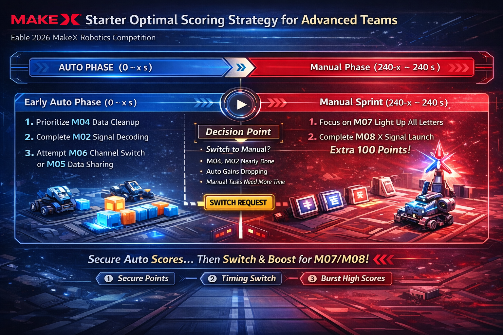

Starter Detail
MakeX Starter 规则重点版
尺寸重量、机械限制、比赛阶段和得分任务一页讲清
这一页把 Starter 的核心规则整理成适合培训分享的卡片版，方便直接讲解和复盘。


Starter 规则摘要
限制
机器人尺寸与重量
- 最大展开尺寸为 300 mm × 300 mm × 300 mm。
- 最大净重量不超过 2.5 kg，包含电池和改装结构件。
机构
机械边界
- 最多 2 个动力轮 + 1 个辅助轮。
- 动力轮禁止使用全向轮，车轮直径不超过 70 mm。
电控
电机与舵机
- 电机与舵机总数量最多 6 个。
- 禁止更改内部机械结构和电气结构。
阶段
比赛时间
- 比赛总时长 240 秒。
- 自动阶段 0 < x ≤ 240 秒，随后进入手动阶段。
1. 机器人尺寸与重量限制
最大展开尺寸
300 × 300 × 300 mm
- 检录时按机器人最大展开状态测量。
- 任何部分都不能超出这个范围。
重量要求
≤ 2.5 kg
- 重量包含电池以及所有改装结构件。
- 不包含战队标记物重量。
轮组与零件
- 最多使用 2 个动力轮 + 1 个辅助轮。
- 动力轮禁止使用全向轮（含麦克纳姆轮）。
- 车轮直径不得超过 70 mm。
- 自制零件单个最大尺寸 5 × 5 × 5 cm，总数 ≤ 15 个。
2. 电机与舵机使用限制
数量限制
电机 + 舵机 ≤ 6
- 电机与舵机总数量最多 6 个。
- 这里是合计上限，不是分别 6 个。
- 只能使用规则表中允许的指定规格电机和舵机。
控制与电池
- 禁止更改任何电机内部机械结构和电气结构。
- 允许在不改变内部结构的前提下进行外部拼装。
- 无线遥控采用蓝牙手柄。
- 可使用 18650 锂电池 3.7V 2500mAh。
- 也可使用 21700 锂电池 3.7V 8000mAh，放电倍率 3C。
3. 比赛时间及阶段
总时长与阶段
240 秒
- 自动控制阶段时长为 0 < x ≤ 240 秒。
- 联盟可在比赛中申请结束自动阶段并切换到手动阶段。
- 手动控制阶段时长为 240 - x 秒。
自动控制阶段任务
- M01 信号激活
- M02 信号解码
- M03 能量环连接
- M04 数据缓存清理及资源置换
- M05 数据共享
- M06 信道切换
手动控制阶段任务
- M07 数据点亮
- M08 X 信号发射
- 自动结束计分后进入手动阶段。
- 手动阶段结束后进行最终计分。
教练讲解时可以把比赛直接拆成 240 秒的两段：先自动做基础任务，再在手动阶段完成更高价值的收尾动作。
4. 所有道具的得分信息
得分道具种类
- 数据块、资源柱、能量环、中央指针装置、战队自制标记物。
- 储物台、资源转换器、挂环装置、标签立牌装置、情标、滑车装置、翻转台、X 信号塔、补给装置。
- 真正直接对应计分结果的核心得分物包括黄色资源柱、指针、红 / 蓝能量环、数据块、黄色方块、翻转台上的字牌、战队标记物，以及翻转台与 X 信号塔的联动状态。
任务分值拆解
自动阶段总上限 360 分
手动阶段总上限 240 分
- M01：黄色圆柱移入方形区域，20 分 / 个。
- M02：指针停留在对应黄色区域内，50 分 / 个。
- M03：己方圆环保持在己方颜色信标塔上，30 分 / 个。
- M04：由 5 个可得分目标构成，总分最高 110 分。
- M05：黄色方块满足共享判定，30 分 / 个，理论最高 90 分。
- M06：完全进入手动任务区的机器人，30 分 / 个，理论最高 60 分。
- M07：翻转台上 4 个字牌成功立起，20 分 / 个，理论最高 80 分。
- M08：战队标记物 30 分 / 个，翻转台抬起且 X 信号塔升起额外 100 分，总分最高 160 分。
最实用的讲法：先讲尺寸、重量、轮组和电机上限，再拆 240 秒的自动与手动阶段，最后把道具得分和任务分值分开讲，观众最容易听懂。